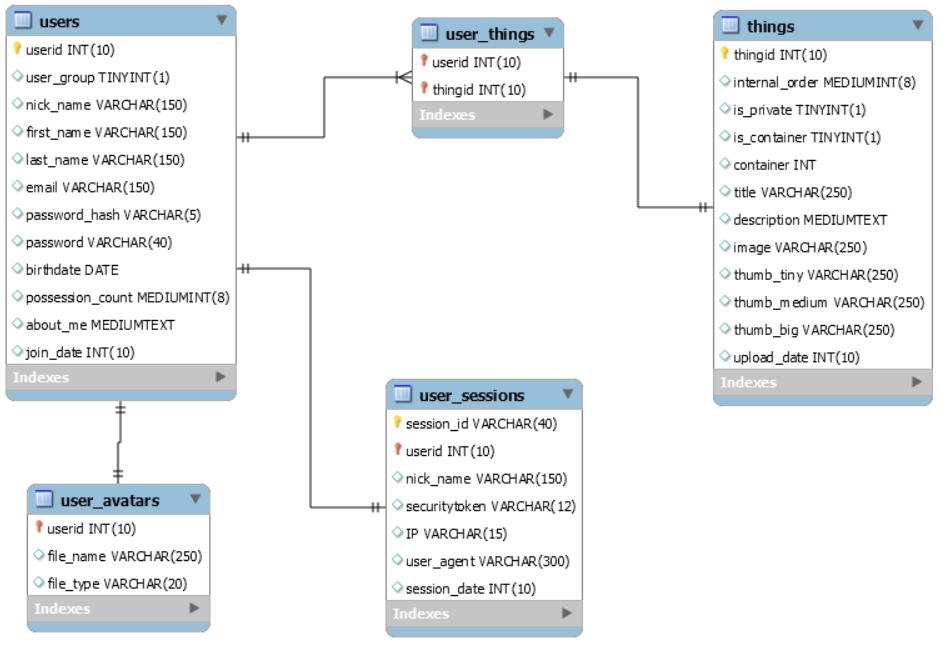
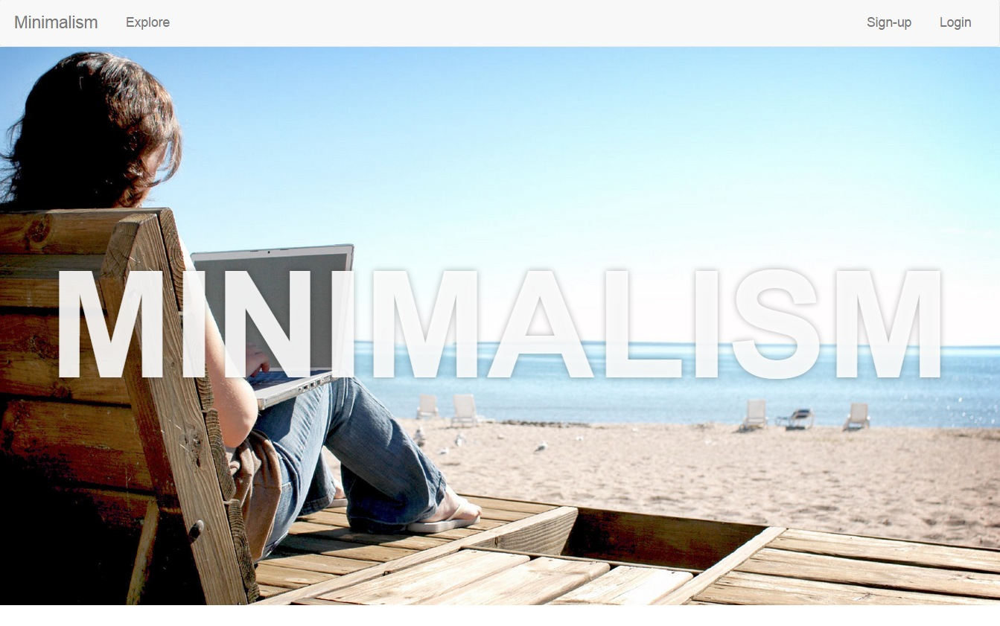
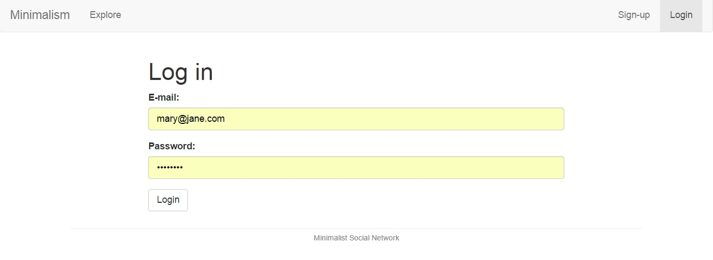
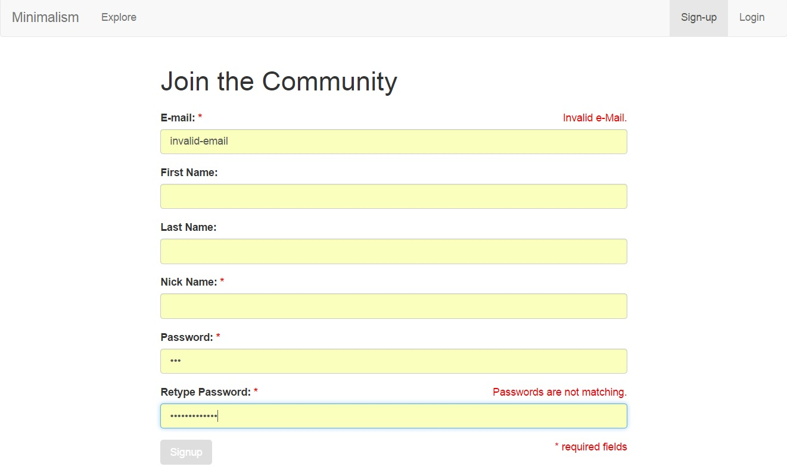
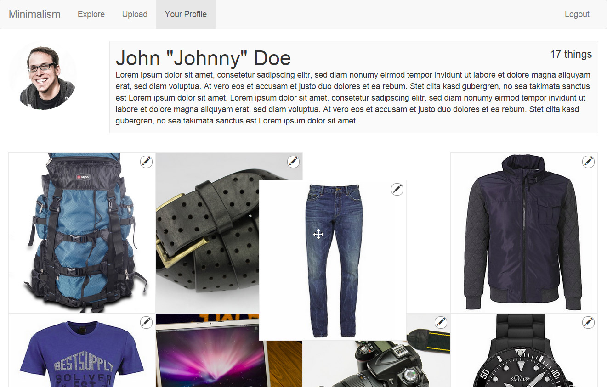
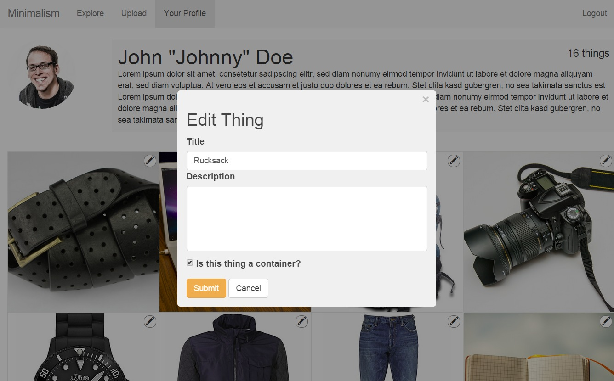
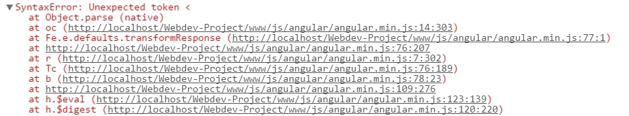

Technical Manual
1. Motivation
The AngularJS framework was one of the technologies used to build the IT service portal of Alstom. With AngularJS, the web developer can easily add many features that will excite the users (cf. the attractive quality attributes in Kano's model1).
The concept of creating a social network for minimalists has been on my mind for a while. Before starting this project, I had a very specific idea about how such a website should look and work. My goal was to build everything as a single-page JavaScript application. The application should only be provided with the absolutely necessary information from the backend. My specific vision and the goal of implementing a "traditional" website with a single-page framework have put AngularJS to a test.
2. Installation instuctions
The following preconditions should be met before installing the web application.2.1 Server requirements
The website was implemented on an Apache 2.4.10, PHP 5.5.15, MySQL Server 5.6 environment with XAMPP on Windows.
Note:
The Apache and MySQL servers should be running on localhost.
The server needs to allow mime type changes via .htaccess files.
The following directory (and its sub-directories) needs to be writable by the server: www/images/things.
2.2 Installation
The install folder contains a basic installation script (install.php) to set up the database. The installation script assumes a running php and mysql server on localhost. The installation script will try to execute under the mysql username 'root' with no password.
The installation script will display the commands that are necessary to import the database file. These commands can be executed manually from the shell. Alternatively, the database schema install/database.sql can be imported manually in a database administration tool, such as phpMyAdmin. Importing the SQL file will create a new MySQL user mdb_user@'localhost' with password "BxGswAav6enSTFJP". These credentials are used by the web application for all database transactions. The credentials are defined in the constructor of the DB class (see 3.3 Database Implementation).
3. Website Architecture
Section 3.1 gives an overview of the application structure. Section 3.2 and section 3.3 describe the database design and implementation.3.1 Overview of Architecture
| Folder | Description |
|---|---|
|
Main application JavaScript files, split into application (app.js), controllers (controllers.js), and services (services.js). app/_prod.js is the production-ready (minified) version that includes both the application and the external libraries. |
|
| Stores the html templates. | |
Provides six separate API endpoints for AJAX calls as part of the application's backend:
|
|
| Provides two API endpoints (list.json and profile.json) as part of the backend to send JSON-encoded data to the frontend. These two files are executed by php via a custom mime type declaration in the folder's .htaccess file. | |
| The inc folder contains php files included by other files of the backend. The file init_app.php is included in all other backend files to set up environment variables. The file functions.php contains common backend functionality. The subfolder classes contains the Auth, Session and DB classes. | |
|
|
Stores the css/sass stylesheets and external JavaScript libraries.
|
3.2 Database Design
The design of the database was the starting point of the development. MySQL Workbench was used to create the tables and to populate the database with initial information. Central to the database are the tables 'things' and 'users', with auxiliary tables tieing them together. All dates are stored as integer unix timestamps which allows for greater flexibility in the formatting of dates and times. 3.3 Database Implementation (see inc/classes/DB.class.php)
The database class of this web application is an extension of the mysqli class. The constructor of the parent class must be explicitly called to instantiate the DB object2.
class DB extends mysqli
{
private $connected = false;
private static $connection = false;
private function __construct()
{
parent::__construct("localhost", "mdb_user", "BxGswAav6enSTFJP", "minimalism", 3306);
self::$connection = $this;
if (self::$connection->connect_errno){
die("Failed to connect to MySQL: (" . self::$connection->connect_errno . ") " . self::$connection->connect_error);
}
else
{
$this->connected = true;
}
return;
}
//...
The database instance can be requested from any part of the backend by calling the static method getInstance() of the DB class.
public static function getInstance()
{
if (!self::$connection) self::$connection = new DB;
return self::$connection;
}
$mysqli = DB::getInstance();The following section describes the three main parts of the application (app, controllers and services).
4. Application
The single entry point to the application is the index.html file in the webroot directory (www/).
Note:
For example, to log in as user 1, use the email address john@doe.com with password johndoe.
4.1 Main application (see app.js)
All AngularJS code has been written in a format that withstands code minifcation of function arguments3.
app.js initializes and configures the AngularJS application and its routes. Custom and Angular-internal modules are injected into the application. An application-wide constant (AUTH_EVENTS) is defined that is used for authentication events4. The heart of app.js are the configuration (minimalistApp.config) and execution (minimalistApp.run) of the application.4.1.1 Router
When using a router, the controllers should not be bound to the templates' markup. Otherwise, the controllers would be executed twice when the route is changed.minimalistApp.config(['$routeProvider', function ($routeProvider) {
//...
$routeProvider.
//...
when('/profile/:userId', {
title: 'Profile',
templateUrl: 'templates/profile.html',
controller: 'ProfileCtrl'
}).
//...
//unknown route -> redirect to homepage
otherwise({
redirectTo: '/'
});
}]);
To change the title for each page, a title property has been added to each route.
This title property can later be accessed to set the page title5.
Angular has a DOM-like structure of scopes. The main element is called the $rootScope. The information and events of the rootScope are inherited by its child scopes. Changes to the rootScope propagate throughout the entire hierachry of scopes. A change to the title property of the rootScope will therefore affect the model linked to the title element of the view (in index.html).
minimalistApp.run(['$location', '$http', '$rootScope', 'AuthService', function ($location, $http, $rootScope, AuthService) {
//...
$rootScope.$on('$routeChangeSuccess', function (event, current, previous) {
if (current.$$route.title) {
$rootScope.title = current.$$route.title;
}
});
//...<title data-ng-bind="title">Minimalist Social Network</title> //...
$rootScope.$on('$routeChangeStart', function (event, next, current) {
// redirect to login page if not logged in
if ($location.path() === '/upload' && !$rootScope.currentUser) {
$location.path('/login');
}
});
//...One of the main reasons to implement server-side authentication instead of merely cookie-based authentication is the ability to store a securitytoken in the user_sessions table. This token is composed of random characters and is created for each user and for each new session (see the CreateToken and SetToken methods of the Session class in inc/classes/Session.class.php). The security token is an added security feature that will be used on all form submissions to check the authenticity of the requests.
AngularJS allows to define a cross-site-request-forgery security token. This token is added to the request header when submitting forms in the application. The backend would then need to check the authenticity of the token by comparing it to the token stored in the user's session.
//...
//read the xsrf token from the cookie and tell the application to use it in all requests
$http.defaults.headers.post['X-XSRF-TOKEN'] = $cookies.csrftoken;
//... //Set security token as XSRF-TOKEN cookie for AngularJS
setcookie('csrftoken',
Session::GetToken(),
isset($_POST[self::REMEMBER]) ? time() + self::SESSION_TIME : null,
'/'
);4.2 Controllers and directives (see controllers.js)
The controllers and directives contain the functionality of the application. Each page has a controller that clears the console and outputs the controller name to the console.
BodyController is attached to the body element of the html page. An object ($scope.listpage) is defined that is used on the #/list page's search box in the navigation menu. Templates that are included with "ng-include", like the navbar, cannot interact with other controllers on the same hierarchical level of scopes. The BodyController is the parent scope of the navbar. If the listpage object is not defined in the navbar's parent scope, the navbar would create its own scope and the search box would not work6.
The NavbarController listens for authentication events to control the visibility of navbar items.
//EVENTS
//listen for authentification broadcast messages
$scope.$on(AUTH_EVENTS.loginSuccess, function (event, data) {
console.log('- NavbarController receives loginsuccess');
$scope.isAuthenticated = true;
$scope.currentUser = data;
});
//...The navbar will also highlight the active menu item based on the active route7.
//...
$scope.isActive = function (viewLocation) {
return viewLocation === $location.path();
};
//...4.3 Services (see services.js)
Services are a way to pass information between controllers and to interact with the backend. The Minimalist Network application implements three services: one to store the user's session and credentials (Session service), one to authenticate the user (AuthService service) and one to send and receive the information of the signup form (SignupService). The authentication process is described in the following section. The signup process uses similar technologies. The client-side and server-side form field validation of the signup process is described in section 4.3.2 and section 4.3.3 respectively.4.3.1 Authentication (AuthService)
The login page (see templates/login.html) asks for the email and password of the user. The form fields are bound to a model called credentials. On submit of the form, the credentials are passed to the LoginFormController's loginSubmit method.
<form method="post" class="form-horizontal" novalidate data-ng-controller="LoginFormController" data-ng-submit="loginSubmit(credentials);">
<div class="form-group">
<label for="em">E-mail:</label>
<input id="em" type="text" name="email" class="form-control" data-ng-model="credentials.email">
</div>
<div class="form-group">
<label for="pwd">Password:</label>
<input id="pwd" type="password" name="password" class="form-control" data-ng-model="credentials.password">
</div>
<div class="form-group">
<input type="submit" class="btn btn-default" value=" Login " />
</div>
</form>The LoginFormController will pass the credentials to the AuthService. The AuthService will send the credentials to the actions/login.php with an http POST request. AuthService will create a session and return the received data on success.
AngularJS sends the request payload in an unusual way8. The JSON payload data cannot be retrieved with the $_POST variable in PHP. It must be read from the input stream. The PHP stream wrapper was used in this application to populate the $_POST variables:
if(empty($_POST['email']) && empty($_POST['password'])){
$postdata = file_get_contents("php://input");
$request = json_decode($postdata);
$_POST['email'] = (isset($request->email) ? : $request->email : false);
$_POST['password'] = (isset($request->password) ? $request->password : false);
unset($postdata, $request);
}AngularJS' http requests are asynchronous. The recommended way of authenticating users in AngularJS is to use a (deferrred) promise that is returned immediately and only later resolved or rejected. An example of this method can be found in the loginRequired function of app/app.js.
This application uses a sparsely AngularJS feature to authenticate users. Using $http.success() is the documented way to use the $http service and to register callbacks. But this way will not return a promise. The $http provider will itself return a promise. The promise is returned immediately. The promise is later resolved with the $http.then() method and received with another then() method in the AuthService. This chain of promises implemented in this application could not be realised by registering the $http.success() callback9.
AuthService.login = function (credentials) {
var authurl = 'actions/login.php';
//...
return $http.
post(authurl, credentials).
then(function (res) {
//the userid arrives as a string
if (res.data.userid !== undefined) {
res.data.userid = parseInt(res.data.userid, 10);
}
Session.create(res.data.sessionid, res.data.userid, res.data.nickname, res.data.securitytoken);
currentUser = Session.getUser();
return currentUser;
});
};
//...AuthService.login = function (credentials) {
return $http.
post('actions/login.php', credentials).
then(function (res) {
Session.create(res.data.sessionid, res.data.userid, res.data.nickname, res.data.securitytoken);
return res.data;
});
};-
minimalistApp.run (in app/app.js)
This call is issued on each refresh of the html page. In this case, the AuthService is called with null as user credentials. This will cause the Auth class (inc/classes/Auth.class.php) to try to authenticate the user with the session cookie (and not with the email and password post variables). -
LoginFormController (in app/controllers.js)
This call is triggered when the login form button is clicked.
4.3.2 Client-side form validation on the signup page (see templates/signup.html)
AngularJS has a variety of built-in functionalities that make the developer's life easier. Binding models to DOM elements is one such functionality. Form validation is another built-in AngularJS feature. The application can interact with the DOM-embedded models without requiring any controller code.
To define a form field as required, the developer only has to add the attribute "required" to the input element. The Signup button will stay deactivated until all required fields are filled in and all other fields are valid.
<input id="usr" type="text" name="nickname" class="form-control" required data-ng-model="credentials.nickname">Specifying the input type "email" will automatically validate the field and check if the entered text is in e-mail format. An error message is shown if the email is not valid.
<div id="invalidemail" class="pull-right form-error" data-ng-show="form.email.$error.email">Invalid e-Mail.</div>
<input id="usr" type="email" name="email" class="form-control" required data-ng-model="credentials.email">The submit button can be deactivated by adding the "(data-)ng-disabled" attribute. Once all fields of the form validate as "truthy", the button is activated automatically.
<input type="submit" data-ng-disabled="form.$invalid" class="btn btn-default" value=" Signup " />4.3.3 Server-side form validation (see templates/signup.html)
The server-side should perform the same form field validation as the client-side to protect the website from injection of illegal characters and code fragments.//...
//password match check
if($_POST['retypepassword'] !== $_POST['password'])
{
if(!headers_sent()) header($_SERVER["SERVER_PROTOCOL"].' 401 Unauthorized');
@json_header();
echo json_encode(array('error' => 'Password mismatch'));
die;
}
//check for invalid user name characters
function NotIsValid($str) {
return (1 === preg_match('~[\<\>\"\'\0]+~', $str));
}
//output an error message when invalid characters are found
function invalid_chars_error($field)
{
if(!headers_sent()) header($_SERVER["SERVER_PROTOCOL"].' 400 Bad Request');
@json_header();
echo json_encode(array('error' => 'Invalid characters in ' . $field . ' detected.'));
die;
}
if(NotIsValid($email = $_POST['email']))
{
invalid_chars_error('email');
}
if(NotIsValid($nickname = $_POST['nickname']))
{
invalid_chars_error('nickname');
}
if(NotIsValid($firstname = $_POST['firstname']))
{
invalid_chars_error('first name');
}
if(NotIsValid($lastname = $_POST['lastname']))
{
invalid_chars_error('last name');
}
//...
5. User Stories
The login and signup processes have already been described above. The following sections describe the implementation of three more user stories.5.1 User Story: Re-ordering things (see controllers.js and actions/order.php)
The user can re-arrange the items on the profile (provided that the user is logged in) via drag and drop. PackeryJS is a library that lays out images in a "masonry" gallery9. PackeryJS' Draggabilly plugin allows to make the images draggable. This library has the added bonus that it is touch-enabled, so images can also be re-arranged on mobile devices and tablets. angular.module('packery', []).directive('workspace', ['$rootScope', '$http', function ($rootScope, $http) {
'use strict';
return {
constrain: 'A',
link: function (scope, element, attrs) {
var tmp = element; //does not work without this assignment
//receive the last element event from the loop (itemRepeatDirective)
scope.$on('LastThing', function (event, element, attrs) {
if ($rootScope.packery === undefined || $rootScope.packery === null) {
console.log('creating packery gallery');
//initialise packery
var packery = new Packery(tmp[0], {
rowHeight: '.module-sizer',
itemSelector: '.thing',
columnWidth: '.module-sizer'
}),
things = {},
i = 0;
//make the gallery draggable
angular.forEach(packery.getItemElements(), function (item) {
var itemid = item.dataset.id,
draggable = new Draggabilly(item);
things[itemid] = i;
i = i + 1; //I prefer "i++;", but Doug Crockford forces me to do otherwise
packery.bindDraggabillyEvents(draggable);
});
packery.layout();
//...
The LastThing event is triggered when the Packery module has processed the last thing in the ngRepeat directive. A setTimeout is needed to emit this event. This setTimeout can be very small or even zero. This "delay" is necessary for the Packery library to be able to manipulate the DOM11.
if (scope.$last) {
setTimeout(function () {
scope.$emit('LastThing', element, attrs);
}, 1);
} //picture drag events
packery.on('dragItemPositioned', function (pckryInstance, draggedItem) {
console.log('reorder-event');
things = {}; //reset object
//loop through the updated elements to get the new order
angular.forEach(packery.getItemElements(), function (item, key) {
var itemid = item.dataset.id;
things[itemid] = key;
});
var console_string = '';
angular.forEach(things, function (item, key) {
console_string += key + ':' + item + ', ';
});
console.log('New Order: ' + console_string.replace(/,$/, ''));
console_string = null;
//things now contains an updated internal order
//store this order in the database
$http({
url: 'actions/order.php',
method: 'POST',
params: {
'userid' : '1',
'things' : angular.toJson(things)
}
}).success(function (data) {
if (data === 'OK') {
console.log('order saved');
} else {
console.log('error with re-ordering');
}
});
5.2 User Story: Editing things (see ProfileCtrl in controllers.js)
ngDialog is a plugin module for AngularJS that allows to create modal dialogs. Logged-in users can edit items on their profile by clicking the edit button in the top right corner of the gallery images.
This button showed unexpected behavior. The icon was not visible in a significant amount of the page loads. This may be a result of the combination of Packery gallery and ng-Repeat. An adjustment of the z-index values and several other CSS modifications did not reliably fix this error. To overcome this display problem, a bug_fix function had to be created and is called in two places (see app/controllers.js). This bug-fix will slow down the page load.
/**
* bug fix - make sure that all the edit icon overlays are showing 100% of the time
*/
var bug_fix = function () {
angular.forEach(angular.element(document.querySelector('#thing-container')).children(), function (item) {
//re-set the css 'position' attribute for the edit icon
//this will ensure that the icon is showing
item.style.position = 'absolute';
});
};
5.3 User Story: Uploading things (see dropzone module in controllers.js and templates/upload.html)
A very convient way to upload multiple pictures is via drag-and-drop. Dropzone.js offers this functionality. As with PackeryJS, a directive had to be created to use the dropzone.js library with AngularJS.
Once initialized, Dropzone.js will post files to actions/upload.php. This script receives the uploaded files one-by-one and checks them in several sequential steps. The filename is sanitized and the file is moved to its final location in the folder images/things/<USERID>, if no errors are found.
//allowed file extensions
$extension_whitelist = array("jpg", "jpe", "jpeg", "png", "gif");
// valid characters that are allowed in the upload's filename
$valid_chars = '\.A-Za-z0-9_\s\!\(\)\+\=\{\}\[\]\'\"\,\~\-';
$upload = @$_FILES['file'] || false;
//validate the upload
if (!$upload || !isset($upload['name']))
{
$errors[] = "Upload is not valid.";
}
elseif (isset($upload["error"]) && $upload["error"] != 0)
{
$errors[] = 'File could not be uploaded.'.
"Error: ".(isset($upload_errors[$upload["error"]]) ? htmlspecialchars($upload_errors[$upload["error"]], ENT_QUOTES) : "<unknown error>");
}
elseif (!isset($upload["tmp_name"]) || !@is_uploaded_file($upload["tmp_name"]))
{
$errors[] = "Upload unsuccessful. Problem with tmp directory?";
}
//...
//sanitize the file name + remove any invalid characters that were previously allowed in the filename
$file_name = trim(preg_replace('/[^'.$valid_chars.']|\.+$/i', "", $upload['name']));
unset($valid_chars);
if (strlen($file_name) === 0) //strlen($file_name) > $MAX_FILENAME_LENGTH
{
$errors[] = "Invalid file name";
}
//these chars should not be in the html output
$file_name = str_replace(array("'", "\"", "\\", "/", "(", ")"), "", $file_name);
$file_name = trim($file_name);
//filename still valid?
if(!$file_name)
{
$errors[] = 'Error uploading file.';
}
if (!preg_match('/\.(' . implode('|', $extension_whitelist) . ')$/i', $file_name))
{
$errors[] = "Extension is not allowed.";
}
//check if there are errors
if(!empty($errors))
{
if(!headers_sent()) header($_SERVER["SERVER_PROTOCOL"].' 400 Bad Request');
@json_header();
echo json_encode($errors);
die;
}
//upload has passed all security checks
else
{
//make sure that this filename is unique
do
{
$file_name = uniqid().'_'.$file_name; //uniqid() to never overwrite a file
}
while (file_exists($save_path.'/'.$file_name));
$new_file = $save_path.'/'.$file_name;
// Process the file
if(!is_dir($save_path))
{
$errors[] = "Could not save the file.";
}
else
{
if (!@move_uploaded_file($upload["tmp_name"], $new_file))
{
$errors[] = "File could not be saved. (" . htmlspecialchars($new_file) . ")";
}
}
//...
The SimpleImage12 class will create three differently-sized thumbnails. The thumbnails are stored in the same folder as the original image in the user's directory in the images folder. The server will respond with a JSON-encoded object with a list of all the thumbnail locations if the upload was successful. Otherwise, it will output a JSON-encoded error message.
6. Testing
To get experience with testing, two different testing techniques (Jasmine and Protractor) were applied in this project. Karma is another testing tool for JavaScript. Karma is not as well documented as Protractor. Note that Protractor and Karma would usually not be used together13.6.1 Testing with Jasmine (stand-alone) (see test/unit/jasmineSpec.js)
Jasime is useful for running unit tests. The Jasmine framework can also be used in other testing frameworks as a plugin. Testing AngularJS applications with Jasmine requires the angular-mock module.describe('List controller', function() {
describe('ListCtrl', function(){
var scope, ctrl, $httpBackend;
beforeEach(module('minimalistControllers')); //minimalistApp
//mock http connection
beforeEach(inject(function(_$httpBackend_, $rootScope, $controller) {
$httpBackend = _$httpBackend_;
$httpBackend.expectGET('data/list.json').respond([{nickname: 'Hans'}, {nickname: 'Franz'}]);
scope = $rootScope.$new();
ctrl = $controller('ListCtrl', {$scope: scope});
}));
it('should create "users" model with 2 users fetched via $http', function() {
expect(scope.users).toBeUndefined();
$httpBackend.flush();
expect(scope.users).toEqual([{nickname: 'Hans'}, {nickname: 'Franz'}]);
});
});
});
6.2 Testing with Protractor (see test/e2e/protractorSpec.js)
Frontend functionality can be tested automatically in several different browsers with Protractor. The testing tool can be used to automatically fill information into form fields and click buttons of the website. The tests for the signup page can be found in test/e2e/protractorSpec.js.//...
describe('Signup page', function() {
var email_field = by.model('credentials.email'),
firstname_field = by.model('credentials.firstname'),
lastname_field = by.model('credentials.lastname'),
nickname_field = by.model('credentials.nickname'),
password_field = by.model('credentials.password'),
retypepassword_field = by.model('credentials.retypepassword'),
submitbutton = by.id('submitbutton');
it('should deactivate the signup button when email is not valid', function() {
browser.get('http://localhost/Webdev-project/www/#/signup');
//test a non-valid email
element(email_field).sendKeys('invalid-email');
expect(element(submitbutton).isEnabled()).toBe(false);
});
it('should show password error message when retyped password does not match password', function() {
browser.get('http://localhost/Webdev-project/www/#/signup');
//check password mismatch
element(password_field).sendKeys('testpassword');
element(retypepassword_field).sendKeys('notmatchingpassword');
expect(element(by.id('passwordmismatch')).isDisplayed()).toBeTruthy();
});
it('should redirect to the "edit profile" page after signup', function() {
browser.get('http://localhost/Webdev-project/www/#/signup');
element(email_field).sendKeys('test@email.com');
element(firstname_field).sendKeys('Test');
element(lastname_field).sendKeys('Tester');
element(nickname_field).sendKeys('Testy');
element(password_field).sendKeys('testpassword');
element(retypepassword_field).sendKeys('testpassword');
element(by.id('submitbutton')).click();
browser.sleep(1000);
//if signup is successful, we are redirected to profile edit page
expect(browser.getLocationAbsUrl()).toMatch("/edit/profile");
});
//...
});
7. Evaluation and lessons learned
This section gives a justification for the chosen technical, architectural and design decisions. Shortcomings of AngularJS and single-page applications in general are discussed in section 7.2.7.1 Technologies and developer tools used in the project
The website could be implemented with a wide range of alternative approaches.Application
| Name | Description |
|---|---|
| HTML5 | The HyperText Markup Language was used in this project to store the order of things in a data attribute. HTML5's local storage could be theoretically also used to reduce the amount of interactions with the backend. However, the single-page application cannot completely replace the backend. Local storage is supported by the major browsersX. Mobile devices however might not be able to use this feature. |
| AngularJS | AngularJS is a popular single page application framework with a large development community. But it is not the only JavaScript framework. Possible alternatives are Ember.js, Backbone.js, Can.js, etc. Many of these JavaScript frameworks violate the separation of concerns (see section 7.2). KnockoutJS calls its approach "Model-View-View Model (MVVM) pattern". Henrik Joreteg gives an excellent review of JavaScript frameworks. |
| Bootstrap | Using Bootstrap as CSS framework offers several distinct advantages. It is widely adopted and used on the web. That means users are familiar with the design elements of the CSS framework. Bootstrap is easy to use and provides a high functionality. Its modular components allow customization of the framework to the project needs. The modular approach reduces the size of the CSS payload. |
| Sass |
Sass is an extension of CSS. It is 100% compatible with any version of CSS. Sass was used in this project to write nested CSS, mixins and variables (see css/style.scss).
An alternative to Sass is called Less. The two CSS languages are supported by a variety of tools. What CSS language and tool the developer uses comes down to personal preference. Sass can be easily integrated with the Grunt task runner, which is why it was chosen for this project. |
| PHP |
FrontendThe Minimalist Social Network application could be implemented with a variety of platforms and programming languages other than JavaScript. Possible programming languages for website development are PHP Hypertext Prepocessor, C# or Visual Basic (in ASP.NET), Ruby (with its framwork "on Rails"), and Python. A variety of frameworks and template engines are available for each of these languages. Two further examples are the Django framework for Python and the Zend PHP framework.BackendPHP was used in this project to interface with the MySQL database and to serve data for the frontend. PHP was chosen because of its familiarity to the author. Security is always a concern in any web development project. Input validation in JavaScript is not as simple as in PHP (which offers the trim, strip_tags, htmlspecialchars and htmlentities functions). Since the application is a single-page application, the backend could be powered with other solutions than PHP. An advantage of the node.js and Meteor platforms is that they allow the use of JavaScript both on the server and client side. A JavaScript backend would be a good match for this project. Node.js needs to be running on top of a web server such as nginx or apache. This adds to the server load. |
| MySQL | MySQL claims to be the most popular open source database system. Being relational, it is easy to understand and deploy. MySQL is part of the standard "LAMP" (Linux, Apache, MySQL, PHP) set-up of many web servers. The technology to deploy MySQL is therefore readily available without requiring additional server software. |
| Packery | A "masonry"-style image gallery used in this project on the user profile page to arrange the images. |
| Draggabilly | A library to make DOM elements draggable, used in this project on the user profile page to allow re-arrangement of the images. |
| ngDialog | An AngularJS plugin to create dialog boxes. The plugin was used in this project on the user profile page to show an edit dialog box on the user's profile. |
| Dropzone.js |
This open source library that provides drag'n'drop file uploads.
It was used in this project on the upload page to
|
| SimpleImage.php | SimpleImage PHP class by Simon Jarvis to resize images. |
jQuery was not used in this project. AngularJS has a basic set of DOM traversal methods built-in (called jqLite). While AngularJS can also use jQuery if it's present, none of the external libraries used in this project (Packery, Dropzone, Draggabilly, and ngDialog) require jQuery. jQuery is generally employed too lightheadedly (see also the discussion of the JavaScript payload below). Most jQuery features can be implemented with pure JavaScript without sacrificing cross-browser compatibility. The only real use for jQuery is in websites that rely on AJAX and need to be cross-browser compatible. AngularJS has its own component that allows to communicate via the XMLHttpRequest object or JSONP. jQuery is therefore not needed in AngularJS applications.
The application could be built on top of an existing content management (CMS) system such as Wordpress or Drupal. One advantage would be that a CMS offers a variety of predefined functions (for example for input validation and sanitization) and plugins. Provided that all functionality is developed as plugins, the maintenance of the code would be put into the hands of the CMS developers. This can be seen as a benefit or disadvantage. Wordpress, as an example, has evolved into a rather "messy" assortment of functions and filters. It is difficult to customize for specific uses other than blogging. Its code-base is heavy and mostly redundant for the use in this project.
The Minimalist Social Network application's structure is of low complexity. There are only two major concepts (things and users) that have to be stored in the database. As content is user-contributed, the application does not require a sophisticated backend for editing content. The website also has only few separate routes. For these reasons, the project was best implemented as a custom solution.
Development tools
| Name | Description |
|---|---|
| Grunt | Automated task runner, used in this project to |
| Jasmine | Behavior-driven development framework for testing JavaScript code. Jasmine was used in this project to test a controller. |
| Protractor | End-to-end testing framework for AngularJS to test the signup page. |
| NPM | Node.js Package manager to install Node Packaged Modules for website development. Used in this project to install external libraries for Grunt and testing. |
| MySQL Workbench | SQL development environment that supports graphical layout and design of databases. Used in this project to design the database and create the SQL file for installation. |
7.2 Shortcomings of AngularJS
AngularJS can help the developer be more productive. It offers elegant features to manipulate the DOM. The framework also forces the developer to work with the correct HTTP status codes to respond to HTTP requests.
But there are many downsides to AngularJS and single-page applications (SPA) in general. The following table lists the issues (in no particular order).
| Level of difficulty | AngularJS is not a beginner's framework. The official tutorials are well-written and even include sample testing code for each tutorial step. However, the weakness of the documentation lies in the details. The many fairly popular questions about recurring website development topics on stackoverflow are a testament of the holes in the AngularJS documentation. Another aspect that makes AngularJS difficult is the way it manages scopes. |
| Scope complexity | Each AngularJS controller creates its own scope. It is difficult to pass information in between controllers and scopes. Included files will get their own child scope, which can be problematic if the included controllers need to interact with other elements of the page. Events can be emitted upwards and downwards the chain of scopes, but only between immediate parents and childs. Emitting events from the rootScope behaves differently from emitting them in controller scope. As a best practice, the hierarchy of scopes should be kept as flat as possible. AngularJS' way of injecting modules, providers, services and scopes leads to messy declarations of functions, services and controllers. |
| Unique framework | AngularJS demands from the developer to "do things the angular way". Angular's camel-case notation for example may or may not be something that the developer likes. Implementing complex websites requires an in-depth knowledge of the AngularJS framework. |
| W3C validation and incompatibility with older browsers |
The angular directives should be written in a HTML5-compatible format (e.g. "data-ng-show" instead of "ng-show").
But AngularJS will replace some of those directives (e.g. ng-init) on run-time, which produces html code that will not pass W3C validation.
The heavy reliance on HTML5 data attributes makes AngularJS incompatible with older browsers. Sites powered by AngularJS cannot degrade gracefully for browser's that have limited or no JavaScript capabilities. |
| Using external libraries | The AngularJS framework puts a considerable overhead on the usage of external JavaScript libraries. A lot of the developer's time is spent on making external libraries work in AngularJS. The PackeryJS gallery library can for example not be applied directly on an ng-repeat directive, because angularJS manipulates the DOM after it is completely loaded14. The solution is to create a custom directive and to instantiate Packery only when all elements of the loop have loaded. Another workaround is to use a setTimeout with short (or zero) duration (as employed in this application). |
| Difficult to debug |
Angular's error messages in the console are often confusing and not very helpful. Oftentimes, the errors do not point to the line in the application's source code, but to a line in the angularJS library (with additional information available online). This makes debugging difficult. A few of these error messages are assembled in appendix A.
Another challenge when debugging is that errors in the backend are obfuscated by the representational layer of the AngularJS framework. If a backend file has errors, the only way to see what's wrong is to inspect the particular request in the network request history of the browser. |
| Separation of concerns | It is a best practice to separate markup, presentation and interaction in an MVC pattern. But AngularJS blurs the line between application logic (controller), content (model) and representation (views). In AngularJS, the developer may describe behavior in the templates' markup15. The templates/navbar.html is an example of such markup that violates the separation of concerns. A lot of the features that make AngularJS unique (e.g. immediate search results, form validation) depend on models and functionality being injected in the view's markup. |
| Heavy payload |
Angular is a relatively heavy framework. The minified JavaScript of this project amounts to 226KB in total. AngularJS contributes 130KB to this heavy payload (using only the cookies, route and main libraries). In comparison, the minified custom application logic (app.js, controllers.js and services.js) amounts only to 11KB. The minified CSS (95KB) could be further optimized by removing unecessary Bootstrap components. In my personal opinion, any JavaScript files above 100KB in size are highly questionable. Even the use of jQuery in a project is often debateable. |
| Slowness | Angular is slow17. It takes a few moments for the page to load. While loading, the footer shows at the top of the page and then gets pushed down by the page's content. This issue is noticable on the local development environment. It is likely that it will be even worse on a production-environment. |
| Form submissions | The back button of the browser works as intended in AngularJS. However, when a user submits a form, the page is never refreshed. That leads to the negative side-effect. If the page is manually refreshed after a form submission, the browser will ask the user if the form data should be submitted again. |
| Visibility of elements |
Angular is 100% frontend oriented. Angular only allows to control the visibility of elements on the page, but it does not remove them.
Angular is an asynchronous framework. Authentication events may occur after the page has loaded.
Angular is therefore not suitable for websites that have hidden areas, like for example a private members' area. While hidden parts can be implemented, the fact that they are visible in the site structure makes them prone to attacks and manipulation. |
| JSON security | Angular's optional JSON security prefix ")]}',"18 limits the portability of the application's JSON data. AngularJS did not recognize the JSON prefix in this application and it had to be removed. |
| Search Engine Optimisation |
One of the major downsides of AngularJS is its URL structure. New websites rely on being indexed by search engines to get traffic. A new social network would especially profit from each profile page being indexed (to maximize traffic and advertisement revenue). Out of the box, AngularJS uses the fragment idenitifer (#) for url routing. Search engines may not recognize the routes as separate parts of the application and may not index the website's pages. There are workarounds19 20, but they may break in the future. While Google can read JavaScript and supports both pushState and hashbangs (#!), the Google crawler technology is far from being perfect21. AngularJS offers an optional HTML5 mode that can be added to the router configuration:Another downside is that html meta tags cannot easily be added to pages in a single-page JavaScript application. This severely limits the meta information that can be provided to search engines like Google, but also to Facebook's crawler. |
| Vertical scrollbar | The vertical scrollbar was enabled permanently to prevent the page content from jumping when searching. AngularJS does not reset the scrollbar when switching between pages. This effect is for example visible when switching from the list page to the much shorter login page. |
| AngularJS websites | The official AngularJS site lists many sample AngularJS websites and experiments14. Granted, this list of examples is user-submitted. But there is a noticable lack of high-profile AngularJS implementations. Backbone.js on the other hand lists many industry-leading names16. |
8. Future work and known bugs
This is a prototype website. There are known bugs and many more features to implement:- Users need to be able to upload avatars.
- Users should be allowed to leave messages on profiles and comment on things.
- Users should be able to add things to a container via drag-and-drop.
- The backend was kept very simple. The different backend files could be combined to create a RESTful webservice.
- A better solution to the edit icon problem should be found.
- When re-ordering images, the image that is being dragged sometimes shows behind other images in the gallery.
- Opening the "edit thing" dialogue box re-arranges the gallery and sends a request to save the gallery order to the server.
- Long user names break the layout on the #/list page.
- The lists of things on the profile and list page need to be split in several pages. AngularJS is surprisingly badly prepared for this common web design feature.
9. Summary
AngularJS is not easy to learn and it is still a relatively new technology. Certain common problems are not addressed in the documentation, others are documented sparsely. Common problems, like pagination, are not addressed at all. It is often difficult to find simple tutorials that describe the implementation of advanced website features. The developer is left alone. Detailed knowledge of the inner workings of AngularJS is often required to solve common web development problems.
Angular is an elegant solution for very simple websites. I see its main application in two areas. AngularJS excels as a framework for marketing and advertisement websites that have a low number of page transitions and that do not require authentication. Angular also is excellent as a component to enrich (existing) websites with "exciting" features such as the instant search in DOM elements. AngularJS is adopted by a large developer community, but surprisingly few high-profile websites have adapted the framework.
For the above listed reasons, AngularJS proved to be a bad choice for this project. Backbone.js appears to be a more stable, reliable, flexible and performant Javascript framework. Backbone.js is also adopted by some of the web's most visited websites.
10. References
11. Appendix
Appendix A - Sample of AngularJS error messages
Appendix B - Technologies used to create this manual
- jQuery. URL: http://jquery.com
- Bootstrap. URL: http://getbootstrap.com
- Bootstrap Docs bs-callout CSS class. URL: http://getbootstrap.com/assets/css/docs.min.css
- Prism Syntax Highlighter. URL: http://prismjs.com